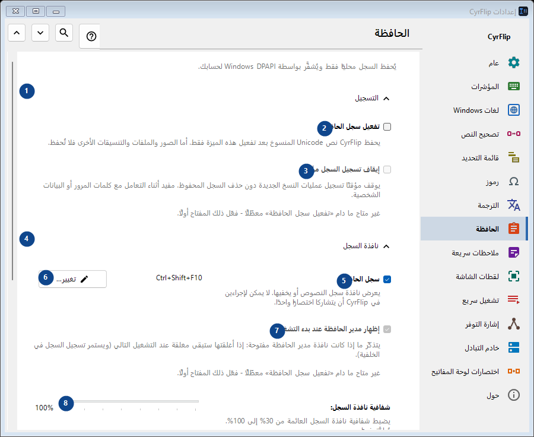
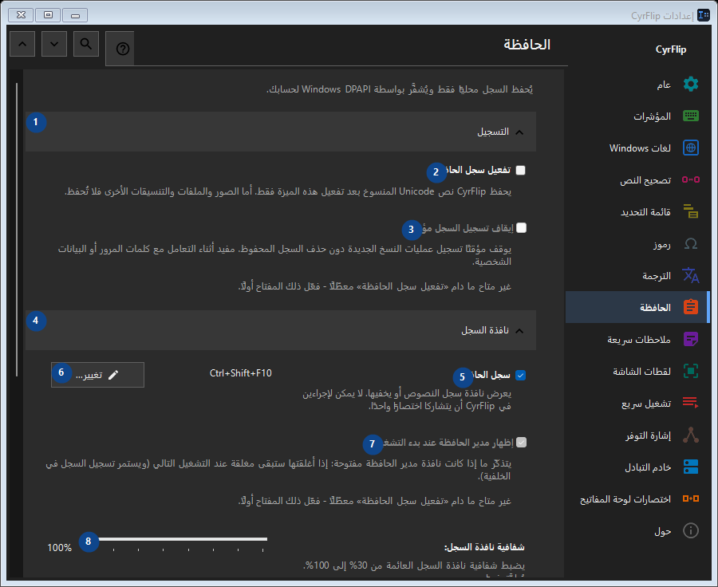

الحافظة
الغرض
يُحفظ السجل محليًا فقط ويُشفَّر بواسطة Windows DPAPI لحسابك.


ترتيب الاستخدام
تُطبق الإعدادات فورًا. لا يوجد ترتيب إلزامي؛ استخدم المجموعات أدناه.
العناصر
1. التسجيل
استخدم هذا الأمر لتنفيذ الإجراء المذكور. اقرأ أي طلب تأكيد قبل الموافقة.
اختصاراتك2. تفعيل سجل الحافظة
يحفظ CyrFlip نص Unicode المنسوخ بعد تفعيل هذه الميزة فقط. أما الصور والملفات والتنسيقات الأخرى فلا تُحفظ.
اختصاراتك3. إيقاف تسجيل السجل مؤقتًا
غير متاح ما دام «تفعيل سجل الحافظة» معطّلًا - فعّل ذلك المفتاح أولًا. هذا العنصر غير متاح حاليًا. فعّل الميزة أو اختر إدخالًا أولًا.
اختصاراتك4. نافذة السجل
استخدم هذا الأمر لتنفيذ الإجراء المذكور. اقرأ أي طلب تأكيد قبل الموافقة.
اختصاراتك5. سجل الحافظة
يعرض نافذة سجل النصوص أو يخفيها. لا يمكن لإجراءين في CyrFlip أن يتشاركا اختصارًا واحدًا.
اختصاراتك6. تغيير - سجل الحافظة
استخدم هذا الأمر لتنفيذ الإجراء المذكور. اقرأ أي طلب تأكيد قبل الموافقة.
اختصاراتك7. إظهار مدير الحافظة عند بدء التشغيل
غير متاح ما دام «تفعيل سجل الحافظة» معطّلًا - فعّل ذلك المفتاح أولًا. هذا العنصر غير متاح حاليًا. فعّل الميزة أو اختر إدخالًا أولًا.
اختصاراتك8. شفافية نافذة السجل
غير متاح ما دام «تفعيل سجل الحافظة» معطّلًا - فعّل ذلك المفتاح أولًا. هذا العنصر غير متاح حاليًا. فعّل الميزة أو اختر إدخالًا أولًا.
اختصاراتك9. البحث في السجل
يفتح نافذة منفصلة للبحث بجزء من النص. أدخل ثلاثة أحرف على الأقل للبحث.
اختصاراتك10. المسح
استخدم هذا الأمر لتنفيذ الإجراء المذكور. اقرأ أي طلب تأكيد قبل الموافقة.
اختصاراتك11. مسح كل السجل
يحذف كل العناصر من الذاكرة ومن الملف المحلي المشفَّر. لا يمكن التراجع عن هذا الإجراء.
اختصاراتك12. النقل إلى كمبيوتر آخر
استخدم هذا الأمر لتنفيذ الإجراء المذكور. اقرأ أي طلب تأكيد قبل الموافقة.
اختصاراتك13. تصدير...
ملف نصي مفتوح واحد يضم ملاحظاتك وسجل الحافظة الذي تختاره: يمكن قراءته في أي محرر أو على الهاتف واستيراده إلى CyrFlip على كمبيوتر آخر. الملف غير مشفّر. يعرض الاستيراد ما ستتم إضافته ولا يحذف شيئًا.
اختصاراتك14. استيراد...
استخدم هذا الأمر لتنفيذ الإجراء المذكور. اقرأ أي طلب تأكيد قبل الموافقة.
اختصاراتك